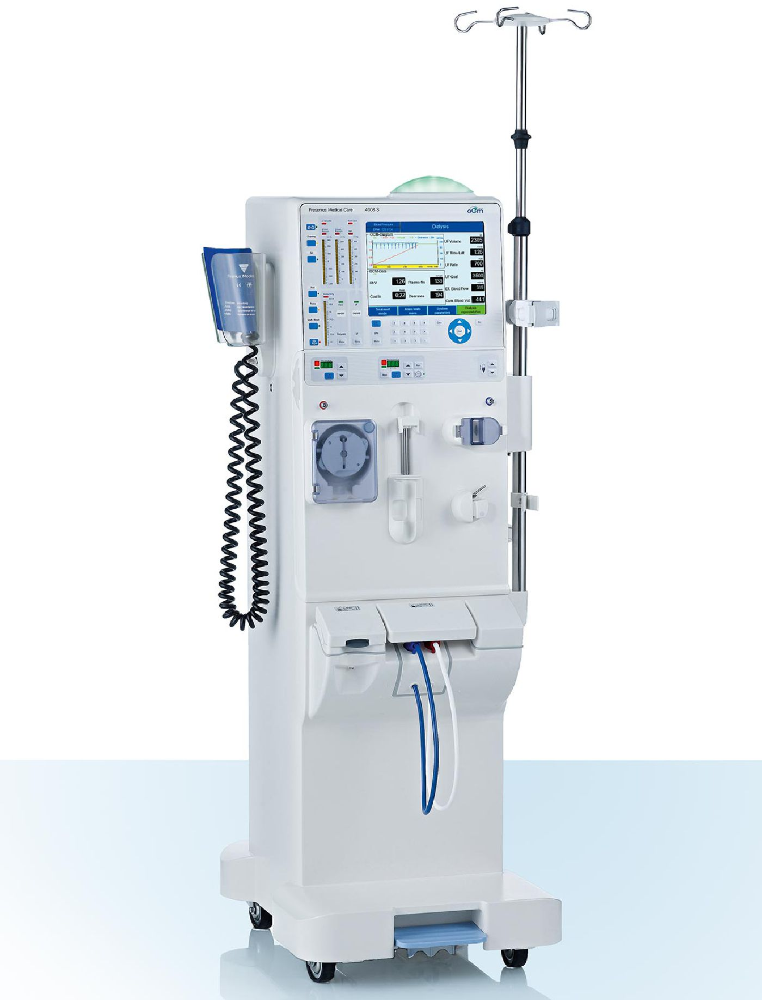

FRESENIUS 4008 S DIALYSIS MACHINEThe Next Generation
The 4008S Next Generation has been developed to provide safety and efficiency for all important treatment modalities within the scope of renal replacement therapies. This includes:
- Bicarbonate or acetate dialysis.
- Single-needle or single-needle click-clack.
- Ultrafiltration and sodium profiles.
- Isolated ultrafiltration / Bergström treatment

FOLLOW US